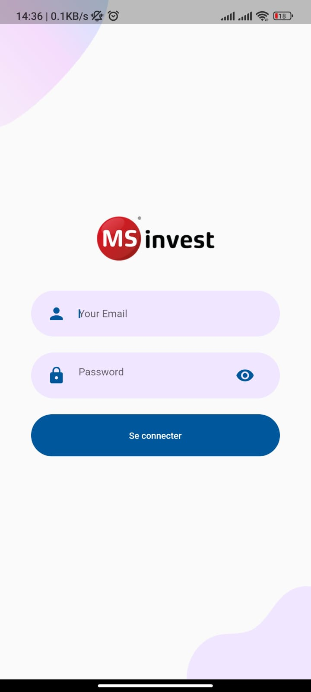
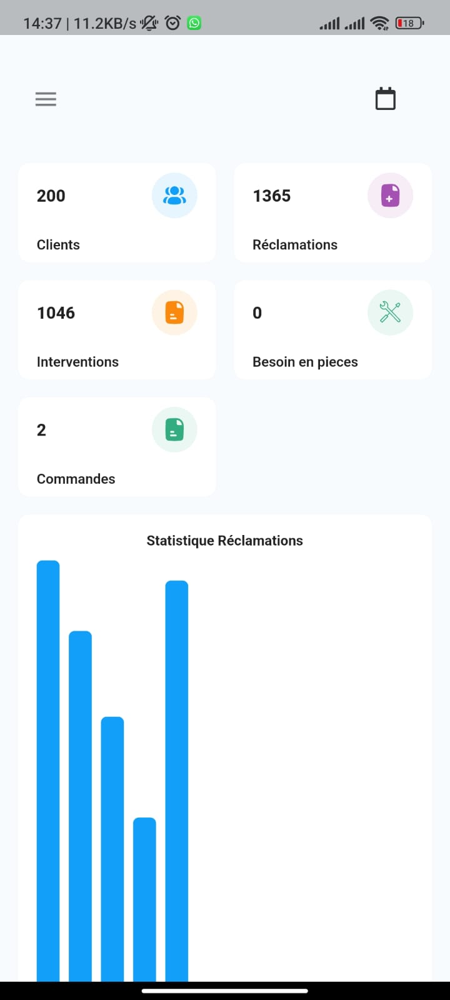
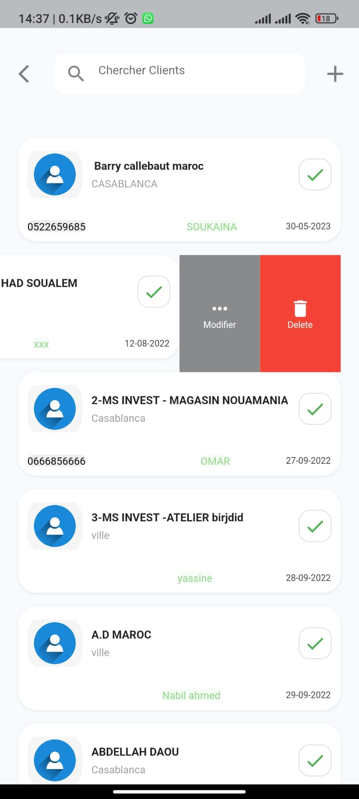
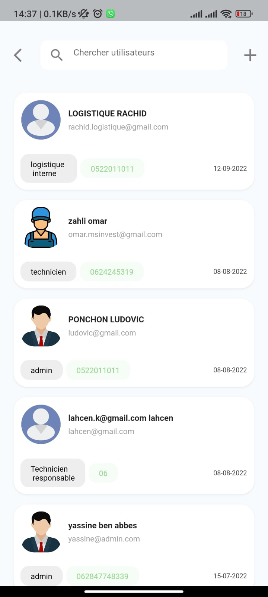
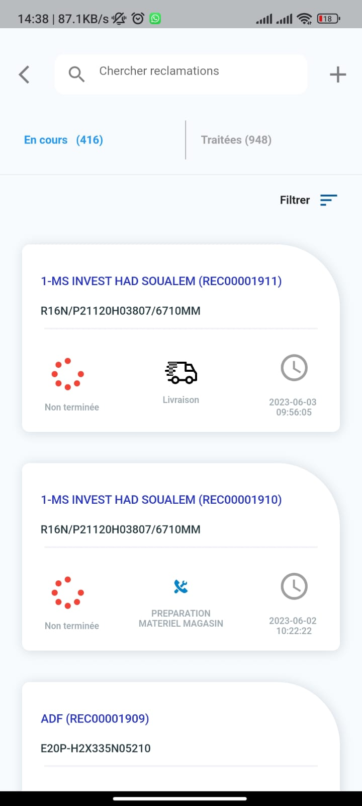
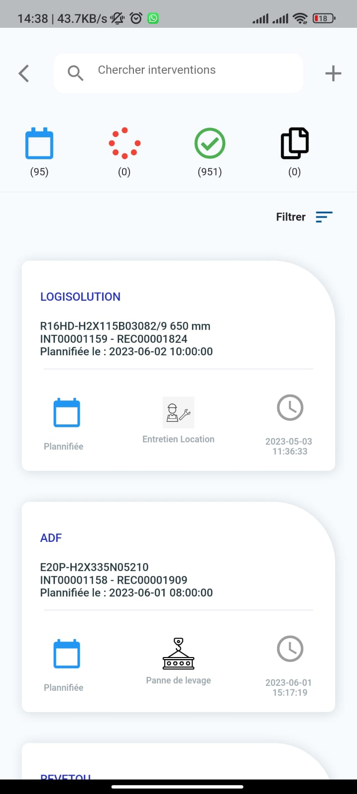
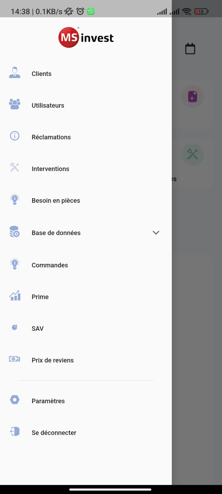
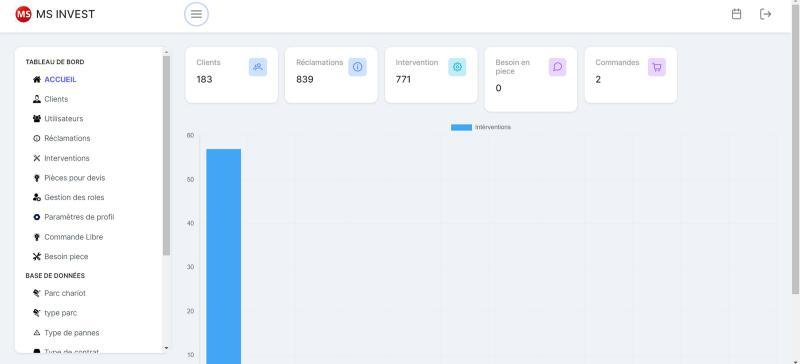
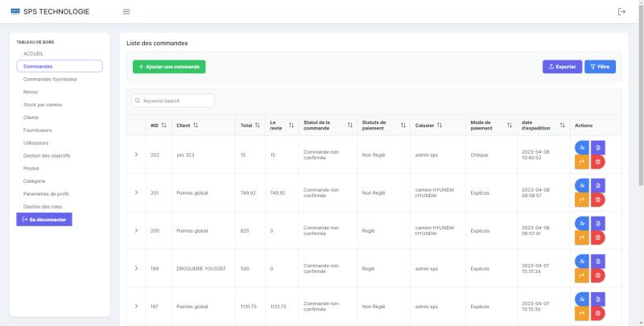

<div id="ajax-page" class="ajax-page-content">
  <div class="ajax-page-wrapper">
    <div class="ajax-page-nav">
      <div class="nav-item ajax-page-prev-next">
        <a class="ajax-page-load" href="portfolio-3.html"
          ><i class="lnr lnr-chevron-left"></i
        ></a>
        <a class="ajax-page-load" href="portfolio-2.html"
          ><i class="lnr lnr-chevron-right"></i
        ></a>
      </div>
      <div class="nav-item ajax-page-close-button">
        <a id="ajax-page-close-button" href="#"
          ><i class="lnr lnr-cross"></i
        ></a>
      </div>
    </div>

    <div class="ajax-page-title">
      <h1>MS INVEST</h1>
    </div>

    <div class="row">
      <div class="col-sm-8 col-md-8 portfolio-block">
        <div class="owl-carousel portfolio-page-carousel">
          <div class="item">
            
          </div>
          <div class="item">
            
          </div>
          <div class="item">
            
          </div>
          <div class="item">
            
          </div>
          <div class="item">
            
          </div>
          <div class="item">
            
          </div>
          <div class="item">
            
          </div>
          <div class="item">
            
          </div>
          <div class="item">
            
          </div>
        </div>

        <script type="text/javascript">
          jQuery(document).ready(function ($) {
            $(".portfolio-page-carousel").imagesLoaded(function () {
              $(".portfolio-page-carousel").owlCarousel({
                smartSpeed: 1200,
                items: 1,
                loop: true,
                dots: true,
                nav: true,
                navText: false,
                margin: 10,
                autoHeight: true,
              });
            });
          });
        </script>
      </div>

      <div class="col-sm-4 col-md-4 portfolio-block">
        <!-- Project Description -->
        <div class="project-description">
          <div class="block-title">
            <h3>Description</h3>
          </div>
          <ul class="project-general-info">
            <li>
              <p><i class="fa fa-user"></i> Yassine ben abbes</p>
            </li>
            <li>
              <p><i class="fa fa-calendar"></i> Jan 2022</p>
            </li>
          </ul>

          <p class="text-justify">
            Development of a mobile application and a website for MS INVEST, the
            official distributor of the German brand STILL. This solution offers
            personalized after-sales service and optimized management of
            interventions on customers' equipment, with real-time field
            information feedback and comprehensive activity tracking. The
            functionalities include:
            <br />
            ✔ User management with different access levels to ensure data
            security and confidentiality.
            <br />
            ✔ Customer management and associated equipment parks for a complete
            view of equipment and related information.
            <br />
            ✔ Complaint management for optimized handling of customer requests.
            <br />
            ✔ Real-time intervention planning for better responsiveness and
            resource optimization.
            <br />
            ✔ Parts needs management.
            <br />
            ✔ Optimal organization of activities with schedule management.
            <br />
            ✔ In-depth analysis of activities and performance through
            statistics.
            <br />
            ✔ Real-time tracking of key indicators and ongoing activities
            through a dashboard.
            <br />
            ✔ Fast and efficient communication with users and customers through
            notifications.
          </p>
          <!-- /Project Description -->

          <!-- Technology -->
          <div class="tags-block">
            <div class="block-title">
              <h3>Technology</h3>
            </div>
            <ul class="tags">
              <li><a>HTML5</a></li>
              <li><a>CSS3</a></li>
              <li><a>Vue.js</a></li>
              <li><a>Laravel Lumen</a></li>
              <li><a>Flutter</a></li>
            </ul>
          </div>
          <!-- /Technology -->

          <!-- Share Buttons -->
          <div class="btn-group share-buttons">
            <div class="block-title">
              <h3>Share</h3>
            </div>
            <a href="#" target="_blank" class="btn"
              ><i class="fab fa-facebook-f"></i>
            </a>
            <a href="#" target="_blank" class="btn"
              ><i class="fab fa-twitter"></i>
            </a>
            <a href="#" target="_blank" class="btn"
              ><i class="fab fa-dribbble"></i>
            </a>
          </div>
          <!-- /Share Buttons -->
        </div>
        <!-- Project Description -->
      </div>
    </div>
  </div>
</div>
